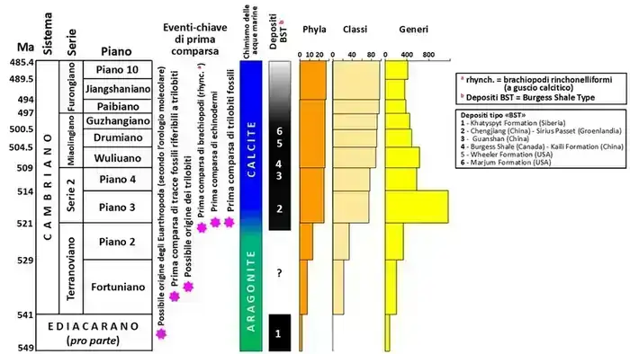

The pattern
Below the Cambrian, the fossil record is thin: the Ediacaran organisms, soft-bodied and mostly unlike anything alive, and before them almost nothing but microfossils and trace marks. Within the Cambrian, beginning around 539 million years ago, the record fills with shells, spines, mouths and limbs. Trilobites, brachiopods, molluscs, worms and the armoured predators of the Burgess Shale appear over roughly twenty to twenty-five million years — a fifth of the time since, and an instant in the history of life.
Maps, diagrams and images


Darwin knew this was a problem. On the Origin of Species devotes a section to the imperfection of the geological record, arguing that the apparent suddenness was an artefact of missing rock. That argument has been tested for a century and a half, and both halves of it have turned out to be partly right.
What makes it look like an explosion
Three things happened close together. Oxygen rose, allowing larger bodies and active predation. Mineralised skeletons evolved — which is what makes the Cambrian visible in the first place. And the animals themselves diversified into the body plans that still exist. The last of these is real: the Cambrian is where the major phyla first appear, and no phylum has appeared since.
What makes it look like a record
Preservation is not uniform. The Burgess Shale and Chengjiang are Lagerstätten: sites where fine mud preserved soft tissue, which is rare. Molecular clocks, calibrated on the DNA of living animals, put the origin of animal groups tens to hundreds of millions of years earlier than their first fossils, in the Ediacaran or Cryogenian. If those clocks are right, the groups existed before the Cambrian and simply were not fossilised until they evolved shells.
Documented: the Cambrian radiation of skeletal animals, the appearance of the major phyla, and the rise in oxygen.
Contested: whether the diversification was as fast as the fossil record suggests, or whether it began much earlier and became visible when animals started building hard parts.
Not supported: the creationist reading that the Cambrian shows animals appearing without ancestors. The trace fossils and the Ediacaran biota are the ancestors, and they are in the rock below.
The honest summary: an unusually fast radiation, made to look faster by an unusually good fossil record.
Why it is here
Because it is the archive's best case of a genuine scientific puzzle that gets quoted by both sides of an argument it does not belong to. The explosion is real. What it means is not settled, and the people who say it is are usually selling something.
Sources for this page
- Wikipedia, “Cambrian explosion” — evidence, timing and competing explanationsen.wikipedia.org
- Wikipedia, “Burgess Shale” — Walcott's quarry and what it preserveden.wikipedia.org
- Wikipedia, “Ediacaran biota” — what came immediately beforeen.wikipedia.org
- Darwin (1859), On the Origin of Species, ch. 9 — the imperfection of the recorden.wikipedia.org
Open resources on this topic
- BookSimona Ginsburg Eva Jablonka The evolution of associative learning A factor in the Cambrian explosion epigenet — Simona Ginsburg; Eva Jablonka · 2010 (Internet Archive, free to read)
- BookThe Cambrian explosion : the construction of animal biodiversity — Erwin, Douglas H., 1958- · 2013 (Internet Archive, free to read)
- BookThe C-value enigma and timing of the Cambrian explosion — ['Dirson Jian Li', 'Shengli Zhang'] · 2008 (Internet Archive, free to read)
- PapersOpen-access articles: DOAJ · PubMed Central · Internet Archive Scholar
- BooksPublic-domain and borrowable copies: Open Library · Project Gutenberg · Google Books
Cite this page
Momin, S. (2026). The Cambrian Explosion. The Larger World Archive. https://drsamonline.github.io/LARGE_GLOBE/cambrian-explosion.htmlMomin, Sohil. “The Cambrian Explosion.” The Larger World Archive, 2026, https://drsamonline.github.io/LARGE_GLOBE/cambrian-explosion.html.Momin, Sohil. “The Cambrian Explosion.” The Larger World Archive, 2026. https://drsamonline.github.io/LARGE_GLOBE/cambrian-explosion.html.@misc{the2026cambrian,
author = {Momin, Sohil},
title = {The Cambrian Explosion},
year = {2026},
howpublished = {The Larger World Archive},
url = {https://drsamonline.github.io/LARGE_GLOBE/cambrian-explosion.html},
note = {Last reviewed 20 November 2026}
}Last reviewed 20 November 2026 · Corrections policy · this page is not peer reviewed